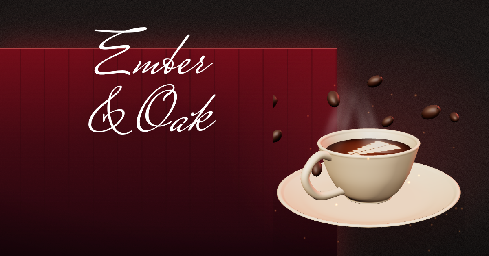
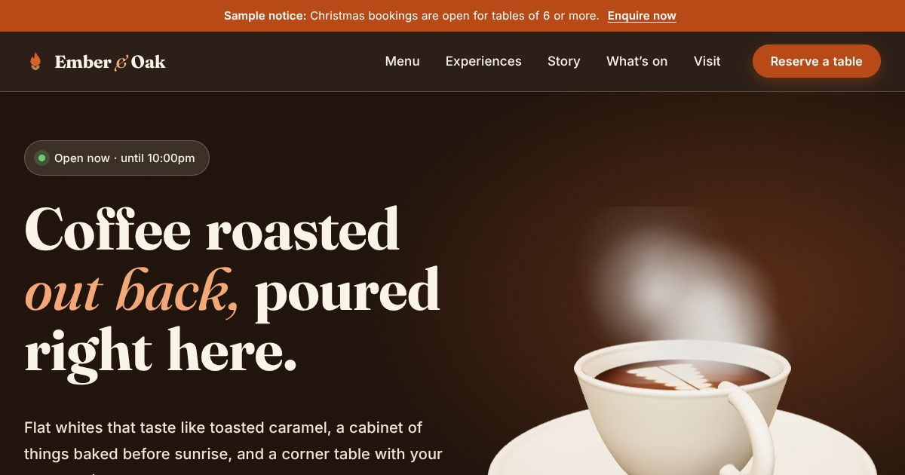
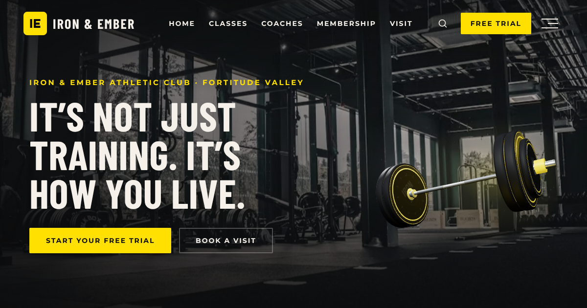
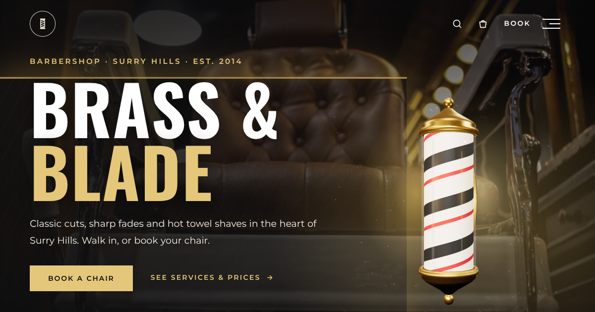
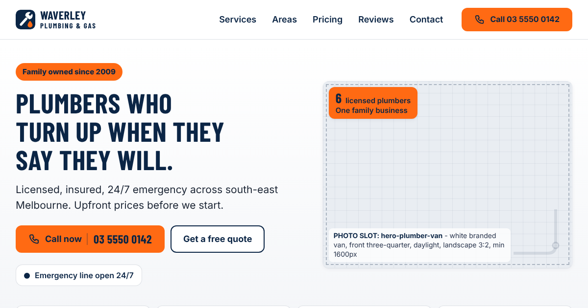
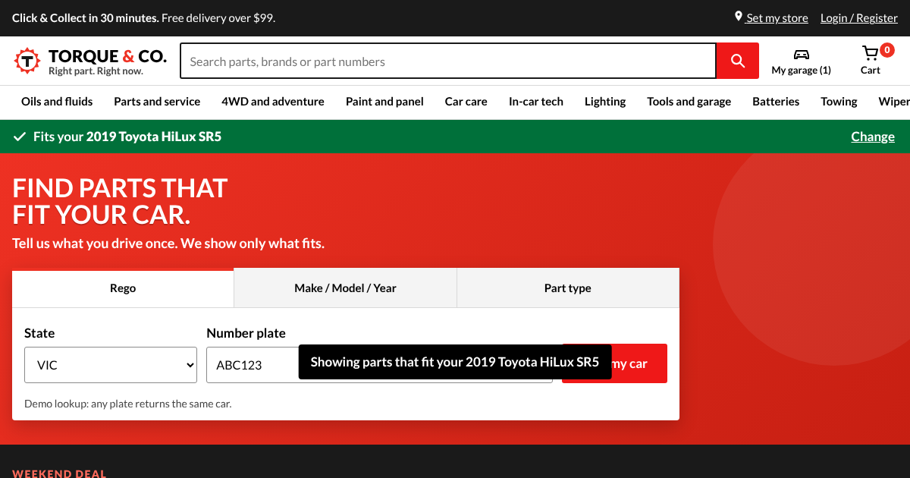
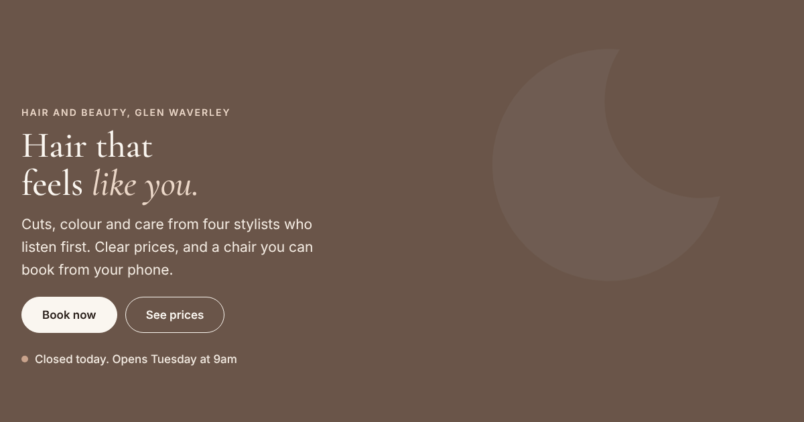

Newest
Ember & Oak Coffee, v2
The cinematic version: full-screen 3D hero, a 38-item menu with pick-up ordering, shop, events, gift cards, journal and more.
Open the demoKB Ventures · Concept demos
Demo 3D websites for local businesses, built with AI and hosted free on GitHub Pages. Every business, name, price and review on these sites is fictional.

The cinematic version: full-screen 3D hero, a 38-item menu with pick-up ordering, shop, events, gift cards, journal and more.
Open the demo
The first, warmer single-page take on the same fictional café, kept as it was.
Open the demo
A spinning 3D barbell, a 7-day free trial, class timetable, coaches, memberships and a visit form for a fictional premium gym.
Open the demo
A spinning 3D barber pole, 24 services with online booking, grooming shop and memberships.
Open the demo
A phone-first site for a local trade: 24/7 emergency call button, suburb checker, price guide, before and after jobs and a quote form.
Open the demo
A fictional auto parts store home page: find parts that fit your car, shop by job, oil finder and Click & Collect.
Open the demo
A calm, editorial salon site: service prices, a phone-first booking widget, stylists, before and after, gallery and gift vouchers.
Open the demo